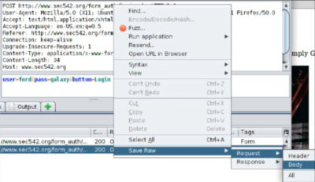

POSTs via Requests
Requests also supports POSTs
• POST options are sent via a dictionary called 'data' in {'variable':'value'} format
• Multiple variables may be passed: data={'variable1':'value1','variable2':'value2'}
• Authentication to a form with POST data:
#!/usr/bin/python3
import requests
r = requests.post('http://example.com/login.php', data = {'user':'Indiana','pass':'Jones','button':'Login'})
print (r.text)
• Authentication to a form with POST data from a file:
1. Save the Body of previous request of login in a Raw file
 2. Use the contnent of this file as POST data
#!/usr/bin/python3
import requests
postfile=open('formbody.raw','r')
postdata = postfile.read()
headers = {'content-type': 'application/x-www-form-urlencoded'}
r=requests.post('http://example.com/login.php',data=postdata,headers=headers)
print (r.text)